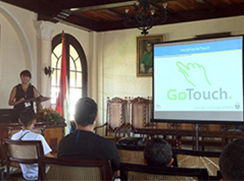

Nota sobre GoTouch en Canal 9
Il exviceministro MOPT, Pedro Castro, è ora ministro del settore, il ministro ex vice vice ed ex abitazioni, Guido Monge, sarà lo starter in questo settore, l'attuale presidente della INA, Olman Segura, sostituirà Sandra Piszk in Lavoro e Inamu direttore esecutivo, Maureen Clarke, ha assunto il rango di ministro.
Castro, Vice ministro dei lavori pubblici in virtù di Presidente Oscar Arias, occuperà la piazza vuota per diverse settimane, dopo Luis Llach lasciato i suoi problemi di salute. Il exviceministro MOPT, Pedro Castro, è ora ministro del settore, il ministro ex vice vice ed ex di abitazioni, Guido Monge, sarà lo starter in questo settore, l'attuale presidente della INA, Olman Segura, sostituirà Sandra Piszk in Lavoro e Inamu direttore esecutivo, Maureen Clarke, ha assunto il rango di ministro.
Castro, Vice ministro dei lavori pubblici in virtù di Presidente Oscar Arias, occuperà la piazza vuota per diverse settimane, dopo Luis Llach i problemi lasciati dalla exviceministro MOPT saludEl, Pedro Castro, è ora ministro del settore, l'ex vice e ex Vice Ministro della Casa, Guido Monge, sarà lo starter in questo settore, l'attuale presidente della INA, Olman Segura, sostituirà Sandra Piszk in Lavoro e Inamu direttore esecutivo, Maureen Clarke, ha assunto il rango di ministro.